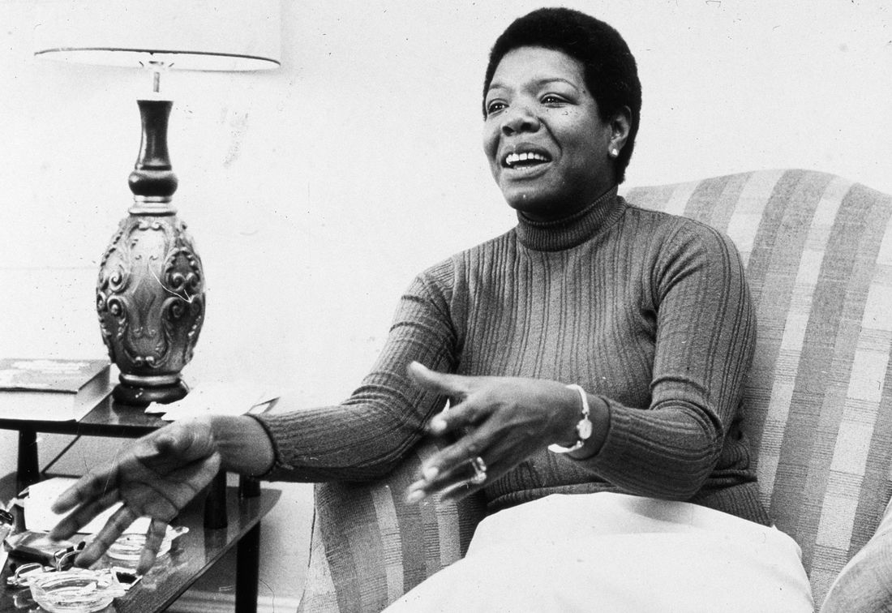

Maya Angelou is an inspiration and strong woman. At the age of 7, she was raped by her mother's boyfriend. After her family found out, her uncles murdered the rapist. At her young age, she did not comprehend the situation, and thought her voice was the cause of his death. She became mute. During this time of voicelessness, Angelou read multiple works of literature voraciously. Through her traumatic experiences grew her ability to inspire and lead.
Overall, Maya Angelou has been able to motivate and encourage others in a way that no one else can. Her ability to write in a way that all people can relate makes her such a well known author and poet. Her works will continue to enthrall for generations.